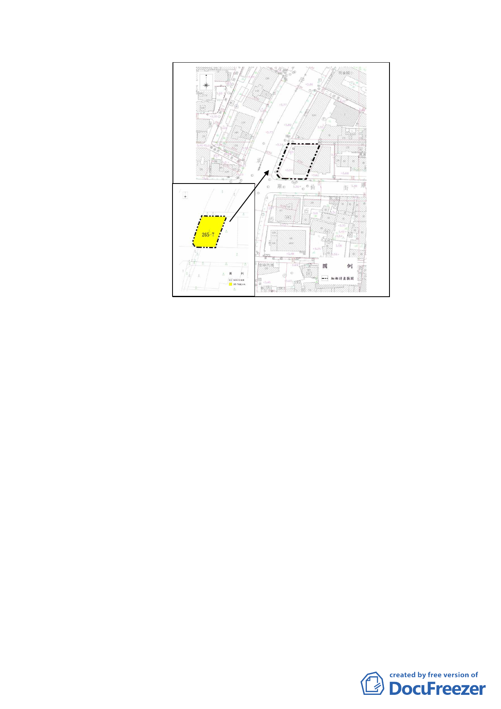

16 日核定實施。
二、計畫緣起：
(一) 本案肇始於本市大同區大龍段一小段265-7及265-39地號
等2 筆都市更新基地（市府98 年6 月16 日核定實施都市
更新事業計畫），領有本府都市發展局97 建字第0461 號
建造執照（原8 筆土地）。惟市府於99 年7月26 日以府
都規字第09934140000 號公告實施「變更臺北市大同區捷
運圓山站西側庫倫街南側部分第三種商業區(特)為道路
用地暨修訂土地使用管制細部計畫案」，將20 公尺寬之
庫倫街南側加寬5 公尺為25公尺寬，故25 公尺寬庫倫街
與40 公尺寬承德路之道路截角，依現行「道路截角標準
表」（「臺北市建築管理自治條例」第6 條規定）認定應
由6 公尺變更為10 公尺，故已與本案基地現行合法有效
之建築執照及更新事業計畫更新核定內容之基地範圍不
同。
(二) 另按內政部 84年4月21日台內營字第8773186 號函釋（略
以）：「..建築物於興工前或施工中申請變更設計時，其
- 23 -